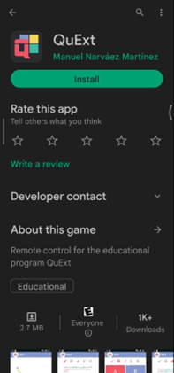

Propuesta Metodológica como Herramienta para el Diseño de Material Educativo basado en la Gamificación.
Lección 2.3: ¿Cómo se instala QuExt?
QuExt se puede instalar en dos Sistemas Operativos, estos son: Ubuntu y Windows. También hay una aplicación para Android, que será revisada al final de la lección.
Instalación en Ubuntu
Para instalar QuExt en tu equipo personal con Ubuntu, tienes que realizar los siguientes pasos:
- Conecta tu equipo a la red.
- Ve al menú inicio y abre un terminal. También puedes abrir un terminal haciendo clic con el botón derecho sobre tu escritorio y seleccionando "Abrir terminal aquí.
- Escribe exactamente en el terminal el siguiente comando:
- sudo apt-get update pulsa sobre la tecla Intro y la contraseña de tu usuario si te la pide.
- Cuando el proceso anterior finalice, escribe este otro comando: sudo apt-get install quext y pulsa la tecla Intro.
- Cuando el proceso acabe, ve al menú Inicio, busca y lanza QuExt. En lo sucesivo, el programa arrancará automáticamente al iniciar tu sesión de usuario.
Nota: En este vídeo se ilustra el proceso de instalación, los mensajes de la consola pueden ser diferentes según el equipo, pero el resultado debería ser el mismo.
Instalar QuExt Ubuntu
Nota 2: Para instalarlo en cualquier equipo con ubuntu 18, se deben seguir los pasos descritos en el video.
Instalar QuExt 4.5 en Ubuntu
Instalación en Windows
Para instalar QuExt en tu equipo personal con Windows debes realizar los siguientes pasos:
- Descarga la última versión del instalador de QuExt de la zona de descargas de la web de la aplicación:
- Haz clic sobre el instalador_QuEx_4.5-5.exe que has descargado previamente.
- Si se muestra una ventana indicando que Windows protegió tu PC, pulsa sobre "Más información" y luego sobre el botón "Ejecutar de todas formas".
- A continuación, al introducir la contraseña del administrador, se mostrará la ventana de instalación de QuExt que te permitirá seleccionar entre dos modos de instalación: QuExt Alumno y QuExt Aula
- En tu portátil o equipo personal, seas profesor o alumno, debes dejar marcada la opción QuExt Alumno.
- La opción QuExt Aula tan solo la debes marcar cuando estés instalando QuExt en el equipo del profesor del aula.
- Para terminar, pulsa dos veces sobre el botón siguiente y, por último, haz clic en Finalizar.
- En Windows, QuExt no se lanza automáticamente al iniciar sesión de usuario y no se muestra en la barra de tareas del escritorio. Para comenzar a utilizar QuExt en Windows debes ir al menú Inicio y buscar QuExt y hacer clic sobre él y se mostrará en la pantalla principal de la aplicación desde la que podrás acceder a todas las utilidades del programa.
Nota: En este vídeo puedes ver el proceso de instalación en Windows desde el instalador descargado en el escritorio.
Instalación Mando QuExt en Android
Para instalar QuExt en tu dispositivo con Android debes seguir los siguientes pasos:
- Busca la PlayStore.
- Escribe QuExt en la barra de búsqueda.
- Oprime el botón Instalar.
- Oprime el botón Abrir para usar.
Mando QuExt - Android

Tip 1
Recuerda que se puede usar cualquier proyector o televisor para mostrar el juego en tu clase.
Tip 2
La instalación es muy sencilla y amigable.
Tip 3
Cuentas con app también para móvil.
Tip 4
Una vez instales el programa, lo puedes empezar a usar.
Obra publicada con Licencia Creative Commons Reconocimiento No comercial Compartir igual 4.0